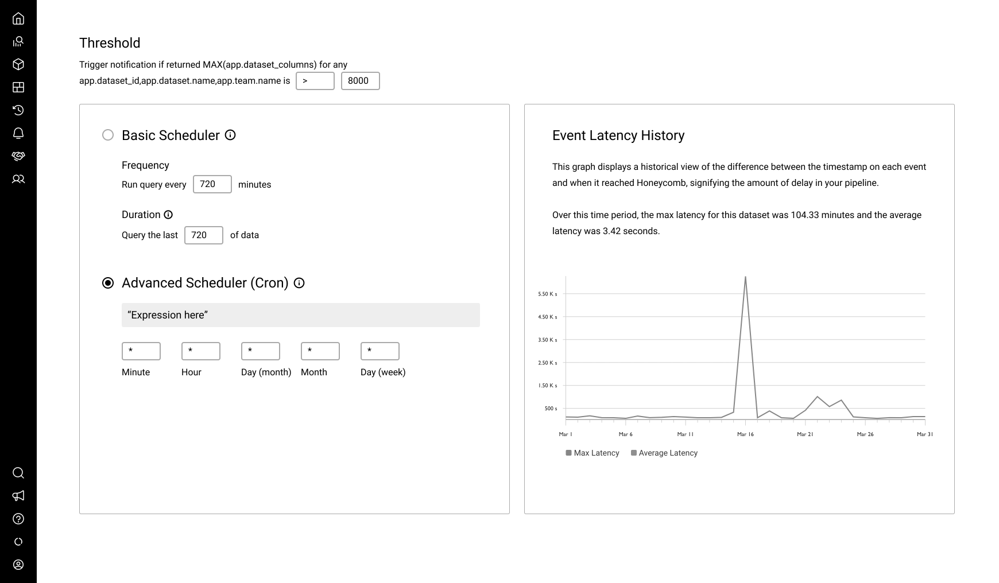
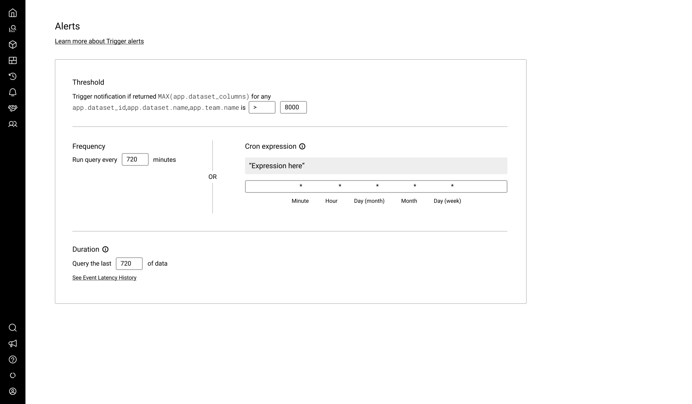
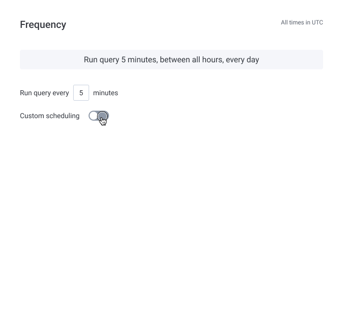
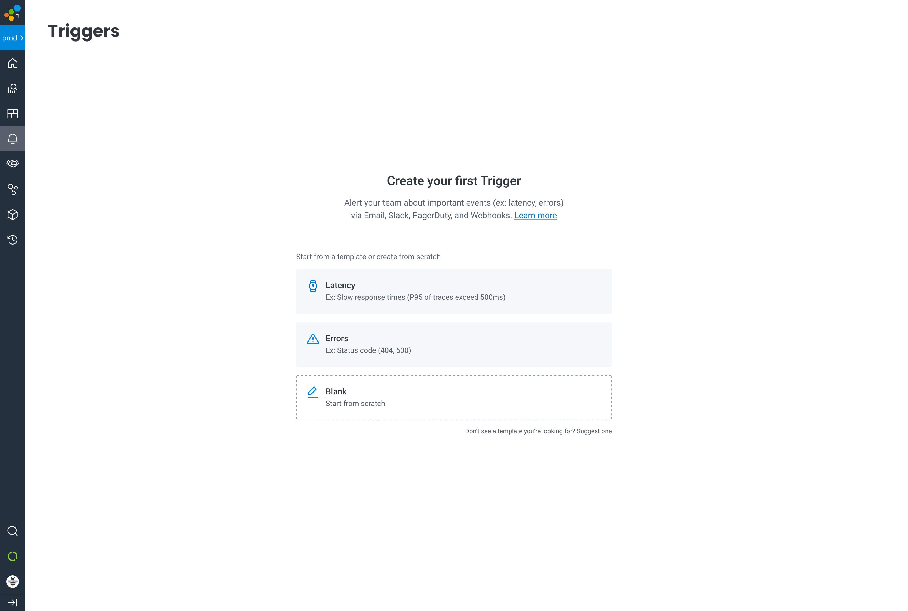

Case study UI UX
Giving DevOps teams more control over their alerts with Custom Trigger Scheduling
As a member of Honeycomb's Signals Team, I designed a new Custom Scheduling feature that gave users more control over when their app's data was evaluated. This control reduced false positives during expected spikes or downtime, empowered Site Reliability Engineers (SREs) to isolate and investigate only genuine issues impacting their users, and increased trust in Honeycomb's alerting capabilities.
Overview
Honeycomb Triggers
Alerts in Honeycomb are typically configured by a Site Reliability Engineer (SRE) who is responsible for the health and availability of their application. For these users, alerts are a critical entry point into a troubleshooting flow to address an underlying problem and ensure a smooth experience for their customers. The most common scenarios for alerting in Honeycomb revolve around latency ("I want to know when our application is performing slowly") and errors ("I want to know how often our customers encounter errors").
SREs configure their alerts using the Triggers feature. When crafting a new Trigger, the user writes a query to be run and evaluated at a desired frequency. If the query result passes the threshold the user defines, recipients are notified via any combination of: Email, Slack, PagerDuty, or Webhooks.

Various entry points for the Trigger detail page, where alerts are created or edited
Problem
Historically, when a Trigger's threshold was crossed, it pushed alerts to the user 24/7. This was sufficient for many DevOps teams, but over time we received a considerable amount of feedback from users who needed more control over their alerts. Users in the finance sector didn't want to be alerted outside of trading hours, users in education didn't want to be alerted outside of typical academic hours, etc. This pattern of feedback extended across several teams and industries — users wanted to reduce false positives by running their Trigger queries during specific times. The noisier the alerts, the harder it can be to identify the ones that deserve attention.
My team, which is responsible for alerting features like Triggers and SLOs, wrote a user story for the project: "As an SRE, I want to be able to configure a window of time when my Triggers will (and won't) alert me, without having to disable the Trigger, so that I'm not alerted during expected/unnecessary times." This in turn helped us establish a north star for our MVP: Optimize DevOps teams' visibility into their alerts by providing the ability to define active/inactive time windows for their Triggers. This would eliminate ignorable noise from expected spikes and isolate unexpected spikes that need to be assessed.
Research
Armed with a solid understanding of the problem and user need, my team kicked off the project by participating in a knowledge transfer with former members of another team, who began preliminary research on Trigger scheduling during the previous quarter. This meeting helped us gain insights from said research and understand where the team left off. We were able to leverage a great deal of information from their competitive analysis, initial user interviews, and technical spike, all of which helped us form a hypothesis, frame an approach, and kickstart additional research.
An interesting topic that came up during our discussion was around the use of cron, which the team originally proposed as a way for users to write their Trigger schedules. Our team had a hunch that cron wasn't a universally-understood tool for our user base. We decided to test our hypothesis by conducting moderated interviews with users. While presenting a clickable low-fidelity prototype, we asked how they would customize a window of time for their Trigger query to run.
The usability study showed that cron raised more questions than it answered. While some participants were familiar with cron expressions and understood how to create a custom schedule, the majority were confused about how to write a cron expression and/or how it translated to the context of Honeycomb Trigger scheduling.


Low-fidelity designs, including a prototype we tested with users to understand the comprehensibility of cron.
Solution
Our MVP: Custom Trigger Scheduling
Based on our supplemental research, we determined that the engineering effort required to use text inputs instead of a cron expression was minimal (we also considered a date picker but decided it was not worth the additional cost). We iterated on the early designs to include inputs for the start and end times, alongside checkboxes for days of the week. This approach proved to be more easily understood in a subsequent round of usability testing when compared to the cron expression.
We also found in our user interviews that translating the Trigger's schedule into a simple sentence, prominently displayed at the top of the section, helped users quickly understand when their Trigger would run. This treatment was inspired by a tool from cronitor and updated in real time as the user tweaked their time window.

Results
We released the MVP for Custom Trigger Scheduling behind a feature flag for the teams who had requested more control over their alert scheduling, and collected feedback over the next two weeks. We began to hear things like:
"So far everything looks good 👍 UI was clear to set up and it's definitely producing less triggered states than without scheduling.."
"Hey thanks, this feature seemed to come out of nowhere, just when we needed it!"
With net positive qualitative feedback, we were confident our MVP solved the immediate user need and released the feature to GA shortly after. As the usage data continues to roll in, our team is excited to learn how sticky (or not) the feature has become, as well as what other enhancements could be made to improve it. We have already received wonderful feedback about the feature that may inform our strategy for version 2.0 (some of which we anticipated and some we did not).
The future of Honeycomb Triggers
What might Honeycomb Triggers look like in the future? My team has recognized the demand for enhancements to other aspects of Triggers, beyond custom scheduling:
- Updates to the Trigger list page. Many Enterprise teams have dozens or even hundreds of Triggers, and extracting meaning out of a long list of them can be challenging. To help the user slice and dice their list and isolate specific groupings, we've discussed filters for things like recipient channel, status, and dataset.
- Updates to the Trigger detail page. Despite recent improvements to the information hierarchy, the page is still quite dense. We've discussed accordions for each section and expandable advanced settings to hide controls that are used less frequently.
- Create a new trigger directly from a query. In some scenarios, users want to create a Trigger directly from the context of the Query page rather than navigating to the Triggers feature and running the query there.
- A summary view. Today, the Trigger detail page includes the form fields for creating and editing. But sometimes users just want to view a Trigger's details, quickly. A separate summary view would allow us to be more intentional about the layout of the content; where the most important details of the Trigger can be displayed at the top of the page.
- Trigger history. Many users want to be able to see the history of a specific Trigger — created date, modified date, when it last ran, when an alert was last sent, when it was resolved etc.
- Trigger Templates. For a user who is new to observability or Honeycomb, creating a Trigger can be somewhat overwhelming because the creation form is lengthy. To reduce the cognitive load and time it might take to create a new Trigger, we recently added Trigger Templates to the list view's empty state (for teams who are sending data from their application). The templates allow a user to quickly create a new Trigger by simply selecting the "Error" or "Latency" options, which populate the query definition and form fields with commonly-used values.
- Product illustration. For new users who may not yet understand what a Honeycomb Trigger is or how it can help them, a new product illustration can visually educate the user and steer them towards creating one.

Trigger Templates for teams who are sending their application's data, but have not yet created a Trigger
A new empty state for teams who haven't yet sent their application's data features a branded product illustration

A new Summary view of the Triggers detail page includes important details at the top and history in the sidebar

An updated Create view includes accordions for each section and templates in the sidebar